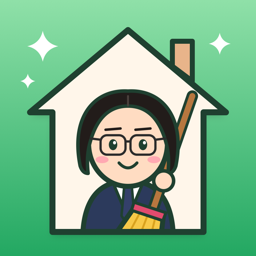

プライバシーポリシー
居候お掃除マン（iPhone アプリ）
このページでは、iPhone アプリ「居候お掃除マン」（以下「本アプリ」）で扱う情報について説明します。
1. アカウント
本アプリは、はじめて開いたときに匿名のアカウントを自動で作ります。メールアドレス・電話番号・パスワードの登録はありません。アカウントには、ランダムな番号（ユーザー ID）がつきます。
2. サーバーに保存する情報
本アプリは、同じ家のメンバーどうしで情報を共有するために、次の情報を開発者のサーバーに保存します。
- 自分で決めたなまえ（ニックネーム）と絵文字、家での役割
- 家の名前・家のコード、カテゴリとおそうじの項目、おそうじセット（名前と中身）、ごほうびポイントの設定とその変更の記録
- おそうじの報告（項目・日時・ひとこと・付けた写真）、確認の結果（OK／やりなおしと理由）
- 依頼（内容・期限・ひとこと・おまけのポイント）、おそうじの予定、ポイントの手動の調整とその理由
- 通知の設定と、通知を届けるための宛先（Apple のプッシュ通知のデバイストークン）
カレンダーや履歴の画面は、これらの情報を読み込んで表示しています。これらは、同じ家のメンバーにだけ見えます（デバイストークンと通知の設定は本人だけ）。データベースの権限で、メンバー以外は読めないようにしています。公開の投稿や、知らない人とつながる機能はありません。
どこに保存するか：開発者が使っている Supabase（Supabase, Inc. のデータベース・ストレージのサービス。サーバーはオーストラリア・シドニー）に保存します。報告の写真は、非公開の保存場所に置きます。
3. 通知
おそうじの予定のリマインドは、iPhone の中で予約する通知（ローカル通知）で、サーバーには送りません。依頼が来た・報告が確認された・新しい報告が来た、のお知らせは、Apple のプッシュ通知サービス（APNs）を使って届けます。そのために、上のデバイストークンを使います。通知はアプリの「設定」→「通知」で種類ごとに止められます。
4. カメラ・写真
カメラと写真は、報告に写真を付けるときだけ使います。えらんだ写真だけを送り、ほかの写真は読みません。位置情報は使いません。
5. 広告・分析・トラッキング
本アプリには広告や分析のツールは入っていません。ほかの会社のアプリやウェブサイトをまたいでユーザーを追跡することもありません。集めた情報を第三者に売ったり、渡したりすることはありません。
6. 情報の削除
アプリの「設定」タブのいちばん下にある「アカウントを削除」を押すと、アカウントと、自分の報告・写真・デバイストークン・通知の設定をサーバーから削除します。家に最後に残った人が削除すると、その家のデータもまとめて削除します。消せなくなった場合は、下のメールアドレスまでご連絡ください。
7. ごほうびポイントについて
ごほうびポイントは、家のメンバーが自分たちで決める数字を、アプリが数えて表示するだけのものです。アプリの中で買ったり、受け取ったり、ほかのものに換えたりする機能はありません。
8. お子さまの利用について
本アプリは、お子さまを主な対象として作られたものではありません。
9. このポリシーの変更
本アプリの機能の追加などにあわせて、このポリシーを変更することがあります。変更したときは、このページでお知らせします。
10. お問い合わせ
このポリシーについてのご質問は、次のメールアドレスまでお送りください。
制定日：2026年11月4日
改定日：2026年11月14日（おそうじセット・カレンダーについて追記）